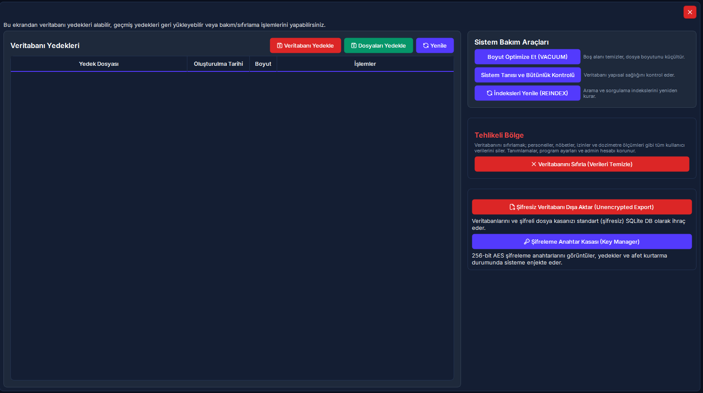
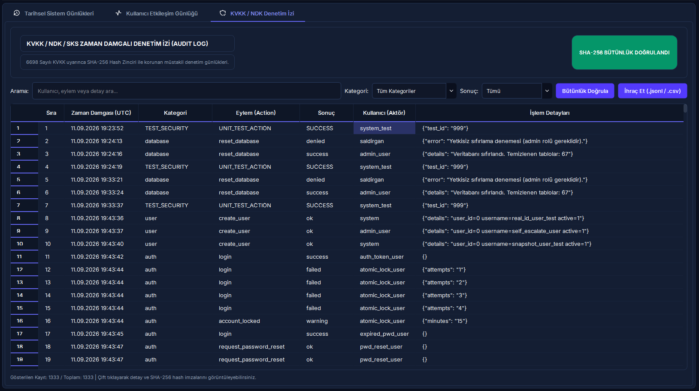

Veritabanı Bakım, Kriptografik Yedekleme & Sistem Güvenliği
PostgreSQL motor optimizasyonu (VACUUM ve REINDEX), 256-bit PBKDF2/AES şifreli yedekleme ve felaket kurtarma (Disaster Recovery), 3 kademeli korumayla fabrika ayarlarına sıfırlama, SHA-256 kriptografik denetim izi ve global çökme yakalama rehberi.
Hızlı Reçete: Şifreli Yedekleme ve Motor Optimizasyonu
Veri kaybı riskini sıfırlayın ve veritabanı sorgu performansını 30 saniyede optimize edin
Verilerin tam dökümünü güvenli şifrelemeyle arşivlemek ve veritabanı ölü satırlarını temizlemek.
[Veritabanı Bakım] ekranında [Veritabanı Yedekle] ve [Dosyaları Yedekle] butonlarına basın; ardından [Boyut Optimize Et (VACUUM)] aracını çalıştırın.
Veritabanı 256-bit AES ile şifrelenip zaman damgasıyla saklanır; PostgreSQL motoru ölü satırları temizleyip disk alanını geri kazandırır.
📌 5N1K Kural ve Fonksiyon Tablosu
Veritabanı yedekleme, geri yükleme, motor optimizasyonu ve denetim araçlarının çalışma mantığı.
| NE? (Ekran Kontrolü) | NEDEN? (Kullanım Amacı) | NASIL? (Çalışma Mantığı) | NE ZAMAN? (Hangi Durumda) | KİM? (Yetkili Kitle) |
|---|---|---|---|---|
|
Veritabanı Yedekle Sol Üst Buton |
Tüm klinik, nöbet, izin ve dozimetre kayıtlarının anlık tam yedeğini almak. | PostgreSQL dökümü alınır; 256-bit PBKDF2/AES ile şifrelenip zaman damgasıyla .dump dosyası üretilir. |
Düzenli periyotlarla veya büyük veri girişi/güncelleme öncesinde. | Sistem Yöneticisi |
|
Dosyaları Yedekle Sol Üst Buton |
Yüklenen personel evrakları, sertifikalar ve cihaz dokümanlarını arşivlemek. | Yüklü dosyalar klasörü zip paketi haline getirilir ve 256-bit anahtarla şifrelenerek .zip olarak saklanır. |
Belge kasası arşivlenmek istendiğinde. | Sistem Yöneticisi |
|
Yedeği Geri Yükle (Yükle) Tablo Aksiyon Butonu |
Veri kaybı veya arıza anında sistemi geçmiş bir tarihe döndürmek. | Kritik uyarı onaylanır ve Sudo şifresi girilir. Dosya çözülüp veritabanına aktarılır; sequence sayaçları senkronize edilir. | Felaket kurtarma veya hatalı toplu işlem sonrası. | Süper Yönetici (Sudo) |
|
Yedeği Dışa Aktar Tablo Aksiyon Butonu |
Yedek dosyasını harici diske veya USB belleğe aktarmak. | Kullanıcının seçtiği konuma dosya yöneticisiyle güvenli kopya çıkarır. | Harici lokasyonda çevrimdışı arşivleme yapılırken. | Sistem Yöneticisi |
|
Yedeği Kalıcı Olarak Silme Tablo Aksiyon Butonu |
Eski ve gereksiz yedekleri diskten temizleyerek alan açmak. | Silme onayı + Sudo doğrulaması sonrasında dosya diskten geri dönüşsüz silinir. | Disk alanı yönetimi gerektiğinde. | Süper Yönetici (Sudo) |
|
Boyut Optimize Et (VACUUM) Bakım Araçları Butonu |
Silinmiş kayıtların bıraktığı ölü satırları temizleyip dosya boyutunu küçültmek. | PostgreSQL VACUUM ANALYZE komutunu koşturur; önceki ve sonraki boyut farkını ekranda özetler. |
Ayda bir veya yoğun veri silme/güncelleme işlemlerinin ardından. | Sistem Yöneticisi |
|
İndeksleri Yenile (REINDEX) Bakım Araçları Butonu |
Bozulan veya şişen arama indekslerini baştan inşa ederek hızı artırmak. | REINDEX SCHEMA public komutuyla tüm indeksler kilitlenmeden yeniden oluşturulur. |
Arama ve sorgularda yavaşlama hissedildiğinde. | Sistem Yöneticisi |
|
Sistem Tanısı & Otomatik Onarım Bakım Araçları Butonu |
Şema tutarsızlıklarını, yetim kayıtları ve form hatalarını tespit edip düzeltmek. | Sihirbaz 5 anomaliyi tarar; [Otomatik Düzelt] ile yetim nöbet kayıtları ve ad boşlukları tek tıkla onarılır. | Dönem sonlarında veya veri tutarsızlığı şüphesinde. | Süper Yönetici (Sudo) |
|
Veritabanını Sıfırla Tehlikeli Bölge |
İşlem kayıtlarını temizleyip sistemi fabrika ayarlarına döndürmek. | Kutuya büyük harflerle "SIFIRLA" yazılır + Sudo şifresi girilir. 48 hareket tablosu silinir; tanımlar, ayarlar ve admin korunur. | Kurum devrinde, test sonu veya sıfır yıl başlangıcında. | Yalnızca Root/Admin (Sudo) |
|
Tarihsel Sistem Günlükleri Log Merkezi (1. Sekme) |
Uygulama, senkronizasyon ve hata loglarını canlı okuyup incelemek. | Dosya seçilir; arama, seviye (INFO/WARNING/ERROR) ve tarih filtresi uygulanarak renklendirilmiş kayıtlar izlenir. | Teknik arıza incelemelerinde veya denetim kontrollerinde. | Sistem Yöneticisi |
|
Kullanıcı Etkileşim Günlüğü Log Merkezi (2. Sekme) |
Kullanıcıların ekranda tıkladığı butonları, girdiği metinleri ve sonuçları görmek. | Oturum ve işlem türü bazlı filtrelenir; çift tıkla ham veri modalı açılır. Son oturum hariç temizlenebilir. | Kullanıcı takılmalarında ve kök neden analizinde. | Sistem Yöneticisi |
|
KVKK Kriptografik Denetim İzi Log Merkezi (3. Sekme) |
Yasal denetim kayıtlarının dışarıdan değiştirilmediğini ispatlamak. | Her kaydın SHA-256 hash zinciri doğrulanır. Tahrifat varsa kırmızı ikaz; sağlamsa yeşil rozet verir. | Resmi KVKK ve Sağlık Bakanlığı denetimlerinde. | Sistem Yöneticisi / Denetçi |
|
Beklenmeyen Hata (Crash Dialog) Global Hata Yakalama |
Sistem çökmesini önleyip teknik detayları anında destek ekibine iletmek. | Yakalanmamış hata anında açılır. Tek tıkla traceback kopyalatır veya geliştiriciye e-posta açar. | Uygulama beklenmeyen bir hatayla karşılaştığında. | Tüm Kullanıcılar |
Saha Mit Avcısı: "Veritabanını Sıfırlarsam Her Şey Silinir mi?"
En Sık Yapılan Yönetici YanılgısıYanlış İnanış: "Veritabanını Sıfırla butonuna basarsam hastane departmanlarım, unvanlarım, tatil takvimim ve admin şifrem de silinir; programı ilk günkü gibi baştan kurup ayarları yeniden girmem gerekir."
Doğru Gerçek: HAYIR. RADPYS mimarisi referans tanımları ile operasyonel hareketleri birbirinden kesin olarak ayırmıştır. Sıfırlama işlemi yalnızca hareket tablolarını (personeller, nöbet çizelgeleri, izinler, dozimetre ölçümleri, arızalar) temizler. Departmanlar, Unvanlar, Resmi Tatiller, Program Ayarları, Sistem Rolleri, Yetki Şablonları ve `Admin` hesabı mutlak koruma altındadır; sistem sıfır işlem verisiyle ancak eksiksiz kurumsal yapısıyla anında kullanıma hazır kalır.
🔄 Güvenli Bakım ve Felaket Kurtarma Akış Şeması
Yedekleme, geri yükleme ve fabrika ayarlarına sıfırlama işlemlerinin güvenlik aşamaları.
graph TD
A(["Yönetici İşlem Başlatır"]) --> B{"Hangi İşlem Seçildi?"}
%% Yedekleme Akışı
B -->|"Veritabanı / Dosya Yedekle"| C["Arka Plan İş Parçacığı Başlatılır"]
C --> D["pg_dump / uploads Klasörü Paketlenir"]
D --> E["256-bit PBKDF2 + AES Şifreleme Uygulanır"]
E --> F[("data/backups/ Dizini")]
F --> G["Tablo Güncellenir & Başarı Bildirimi"]
%% Geri Yükleme Akışı
B -->|"Yedeği Geri Yükle"| H["Kritik Veri Kaybı Uyarısı Verilir"]
H --> I{"Kullanıcı Onayladı mı?"}
I -->|Hayır| J["İşlem İptal Edilir"]
I -->|Evet| K["Sudo Modu: Yönetici Şifresi Doğrulanır"]
K --> L["Yedek Dosyası 256-bit Anahtarla Çözülür"]
L --> M["pg_restore / uploads Klasörüne Basılır"]
M --> N["Sequence Sayaçları Senkronize Edilir"]
N --> O(["Programı Kapatıp Açınız Uyarısı"])
%% Motor Bakım Akışı
B -->|"VACUUM / REINDEX"| P["PostgreSQL Motoruna Bakım Emri Gönderilir"]
P --> Q["Ölü Satırlar Temizlenir / İndeksler Baştan Kurulur"]
Q --> R["Boyut Kazanımı ve Başarı Raporlanır"]
%% Sıfırlama Akışı
B -->|"Veritabanını Sıfırla"| S["Admin Rolü Kontrolü Yapılır"]
S --> T["Kutuya BÜYÜK HARFLERLE 'SIFIRLA' Yazılır"]
T --> U["Sudo Modu: Yönetici Şifresi İstenir"]
U --> V["48 İşlem Tablosuna TRUNCATE CASCADE Uygulanır"]
V --> W["Tanımlar, Roller, Ayarlar ve Admin Hesabı Korunur"]
W --> X(["Sıfır Kurulum Durumuna Dönüldü"])
style A fill:#06b6d4,stroke:#0891b2,stroke-width:2px,color:#fff
style B fill:#f8fafc,stroke:#94a3b8,stroke-width:1.5px,color:#0f172a
style G fill:#10b981,stroke:#059669,stroke-width:2px,color:#fff
style O fill:#3b82f6,stroke:#2563eb,stroke-width:2px,color:#fff
style X fill:#ef4444,stroke:#dc2626,stroke-width:2px,color:#fff
🖼️ Arayüz Ekran Görünümleri
Masaüstü Veritabanı Bakım ve Birleşik Log Merkezi pencerelerinin kontrol panelleri.


📋 Adım Adım Operasyon Rehberi
Yedekleme, geri yükleme, motor bakımı ve sıfırlama işlemlerinin eksiksiz adımları.
Şifreli Veritabanı ve Evrak Yedeği Alma
Sol menüden [Veritabanı Bakım] ekranına girin. Pencerenin sol üstündeki [Veritabanı Yedekle] butonuna basın. Arka planda PostgreSQL dökümü alınıp 256-bit AES ile şifrelenecek ve data/backups/ klasörüne .dump dosyası olarak kaydedilecektir. Yüklü personel evraklarını ve taranmış belgeleri de arşivlemek için yanındaki [Dosyaları Yedekle] butonuna tıklayın.
Eski Bir Yedeği Geri Yükleme (Felaket Kurtarma)
Tablodan dönmek istediğiniz tarihli yedeği bulun ve en sağdaki [Yükle] butonuna basın. Ekrana gelen kritik uyarı penceresinde [Evet]'e tıklayın. Ardından açılan pencereye Sistem Yöneticisi şifrenizi (Sudo Doğrulaması) girin. Geri yükleme tamamlandıktan sonra, verilerin ekranda eksiksiz güncellenmesi için uygulamayı kapatıp yeniden başlatın.
PostgreSQL VACUUM ve REINDEX Motor Bakımı
Sağ taraftaki [Sistem Bakım Araçları] kartına gidin. Silinen satırların bıraktığı boş alanları motora geri kazandırmak için [Boyut Optimize Et (VACUUM)] butonuna basın. İşlem bitince önceki ve yeni boyut farkını gösteren bilgi kutusunu onaylayın. Arama indekslerini hızlandırmak için [İndeksleri Yenile (REINDEX)] butonuna tıklayarak indekslerin baştan kurulmasını sağlayın.
Sistem Tanısı ve Otomatik Onarım Sihirbazı
Bakım panelindeki [Sistem Tanısı ve Bütünlük Kontrolü] butonuna tıklayın. Açılan sihirbaz şemadaki yetim nöbet kayıtlarını, hatalı izin tarihlerini ve trim edilmemiş isim boşluklarını tarar. Sarı anomali ikazı varsa üstteki [Otomatik Düzelt & Onar] butonuna basıp Sudo şifrenizi girin. Sistem hataları saniyeler içinde şema düzeyinde onaracaktır.
Tehlikeli Bölge — 3 Kademeli Fabrika Ayarlarına Sıfırlama
Sağ alttaki kırmızı [Tehlikeli Bölge] alanında bulunan [Veritabanını Sıfırla (Verileri Temizle)] butonuna basın. Açılan kutuya tam olarak büyük harflerle SIFIRLA yazıp butona tıklayın. Ardından yönetici şifrenizi girin. Sistem tüm personelleri, nöbetleri ve izinleri sıfırlayacak; ancak tanımlarınız, departmanlarınız ve admin hesabınız kesinlikle korunacaktır.
Beklenmeyen Hata (Crash Dialog) Anında Teknik Destek Bildirimi
Uygulama beklenmedik bir hatayla karşılaştığında kapanmaz; ekrana koyu temalı Beklenmeyen Hata penceresi gelir. [Hata Detayını Kopyala] butonuyla traceback dökümünü panoya alabilir veya [E-Posta Gönder] butonuna tıklayarak doğrudan radpys.iletisim@gmail.com adresine hazır formatta teknik hata raporu iletebilirsiniz.
❓ Sıkça Sorulan Sorular (SSS)
Veritabanı güvenliği, şifreleme ve motor bakımı hakkında en çok merak edilen sorular.
Alınan bir yedeği başka bir sunucuya veya yeni bilgisayara taşıyıp yükleyebilir miyim? ▼
yedek_sifreleme_anahtari değerine sahip olması gerekir. Bu anahtar [Program Ayarları] > [Güvenlik] bölümünde yer alır. Anahtarı yeni sisteme aktardıktan sonra yedeği data/backups/ klasörüne kopyalayıp [Yenile] butonuna basarak anında geri yükleyebilirsiniz.